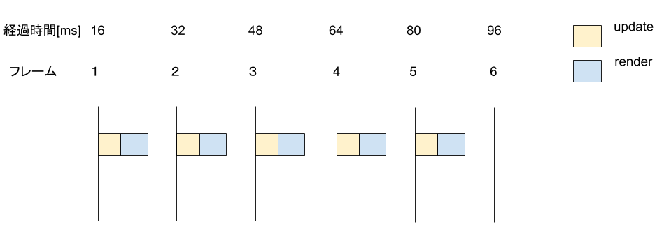
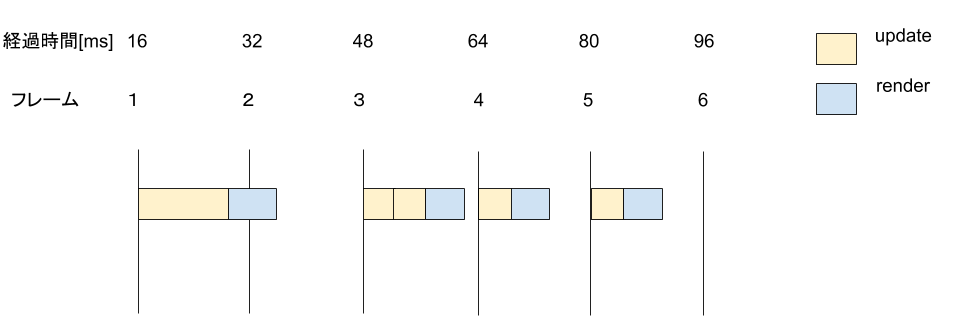
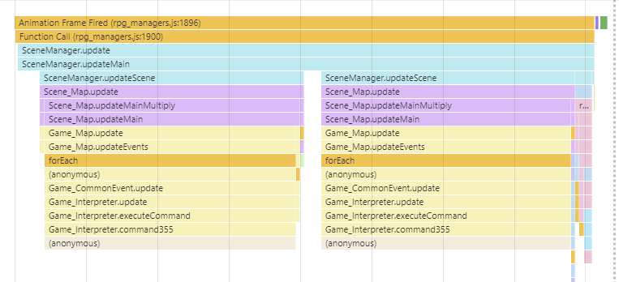
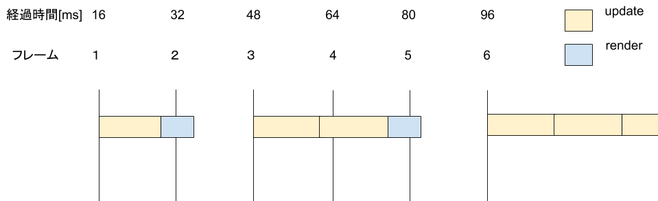
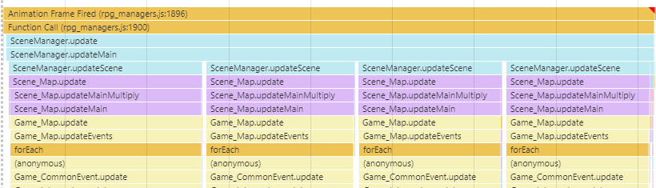

ゲームループの話
ツクールMVのゲームループ
jsでゲームループを作る、つまりフレームごとの処理を行うには、requestAnimationFrameを使用してディスプレイのリフレッシュレートと同期します。requestAnimationFrameは結構最近の話で、2012年ぐらいに私がjsでゲームを作っていたころはsetTimeoutを使用していた覚えがあります。
ツクールMVではSceneManagerでrequestAnimationFrameが使用されています。
SceneManager.updateがrequestAnimationFrameのコールバックで呼ばれ、そこから各updateが伝搬していく形になっています。
updateMain
特に大事なところが以下のSceneManager.updateMainです。
Utils.isMobileSafari()の方はデバイス対応だと思うので今回は無視して良いです。
大きく分けて2つの要素があります。処理の更新(update)と描画(render)です。
-
処理の更新(updateScene)
キャラクターが移動してどこの座標にいくか、ウィンドウに何を表示するかなどのゲーム全体の処理 -
描画(renderScene)
updateの結果を元に画面を描画しなおす
SceneManager.updateMain = function() {
if (Utils.isMobileSafari()) {
this.changeScene();
this.updateScene();
} else {
var newTime = this._getTimeInMsWithoutMobileSafari();
if (this._currentTime === undefined) { this._currentTime = newTime; }
var fTime = (newTime - this._currentTime) / 1000;
if (fTime > 0.25) { fTime = 0.25; }
this._currentTime = newTime;
this._accumulator += fTime;
while (this._accumulator >= this._deltaTime) {
this.updateInputData();
this.changeScene();
this.updateScene();
this._accumulator -= this._deltaTime;
}
}
this.renderScene();
this.requestUpdate();
};
60FPS出ている場合
上記処理を簡単な図で示すと以下のようになります。
60FPSで動作するので、1秒間に60回更新・描画されることになります。
つまり、1フレーム 1/60[s]=16.6666[ms]です(省略して16[ms]と表記します)。
処理落ちしなければ以下の図のように毎フレームごとに1回ずつupdateとrenderが走ります。

処理落ちした場合
仮にupdateで重い処理が1フレーム走って16[ms]内に収まらなかった場合、以下の図のようになります。
リフレッシュレートに同期しているので3フレーム目の頭から始まり、3フレーム目に辻褄が合うようにupdateを2回実行します。
renderは結局、最後の結果を描画すればいいので常に1回です。

実際にDeveloper Toolで見ると、updateSceneが2回呼ばれているのがわかります。

処理落ちし続けた場合
先の例だと1フレームだけ重い処理なので、すぐにfpsは安定します。
しかし、いわゆる重い並列コモンを実行してしまい解除しなかった場合、以下のようにどんどんupdateが積み重なってしまい、動作しなくなってしまいます。
よく並列コモンの最後に1フレームのウェイトを入れる話を聞きますが、この図から推察すると意味があるように見えます。
2回実行されるupdateのうちの片方が小さくなるので、積み重なっていくのが小さくなる可能性があるからです。

ちなみに積み重なったupdateはDeveloper Toolで見るとこんな感じです。

終わりに
実際動かすと今回の図のようにきれいな感じにならないです。
requestAnimationFrameに誤差があるのか、微妙にずれていきますが、そういう仕様なのかイマイチ私はわかっていません。